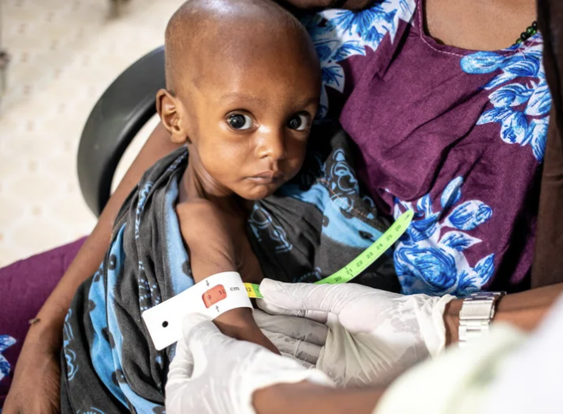
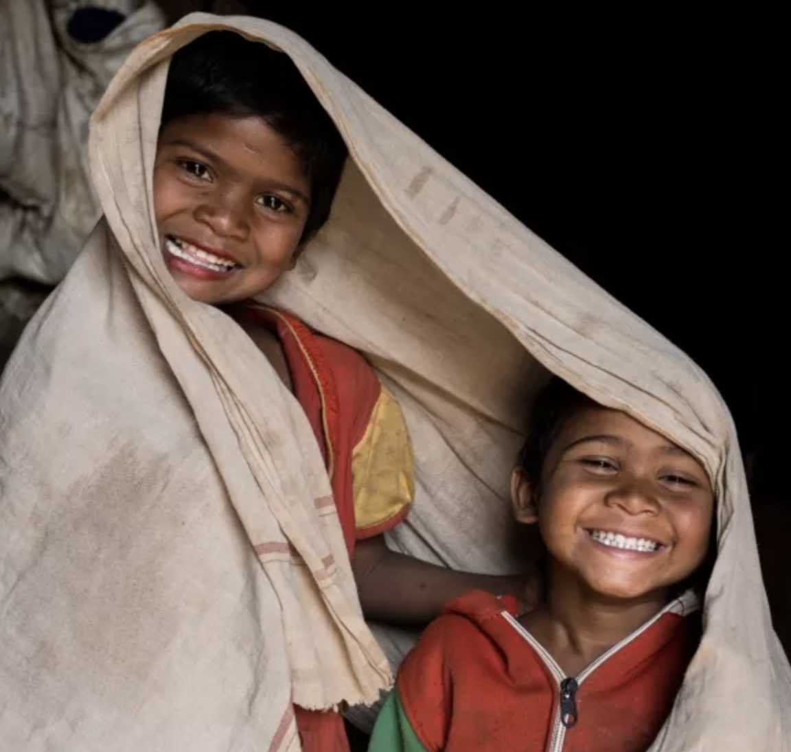
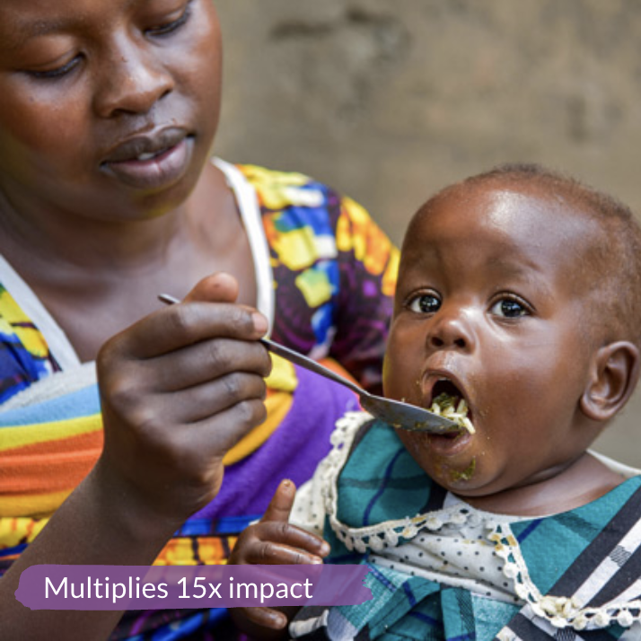

Resources to help prevent Malnutrition
You can help reduce world hunger by visiting these links, reading the articles, and donating (if possible) and help make a change today!



Click here to donate to: UNICEF, Action Against Hunger, and World Vision, respectively.
Please please read them and if possible donate to these children and their families they need all the love and support they can get.